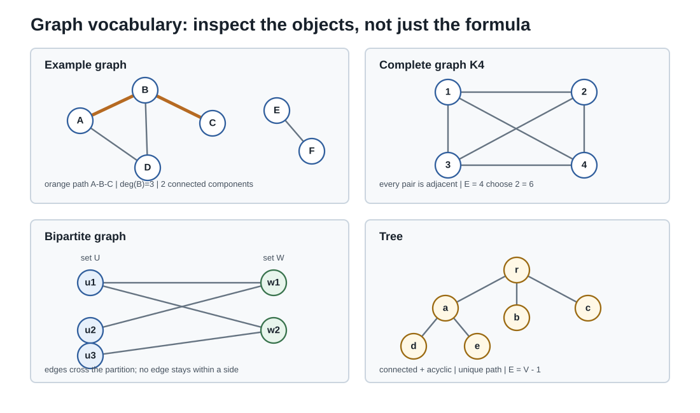

本页目录
图论与组合 II · 图的基本理论
图 = 顶点 + 边，关系的最简数学模型。1736 年 Euler 用它一举解决七桥问题，顺手创立了这门学科。本页走主干：度与握手定理 → 连通与树 → Euler/Hamilton 两类回路（一个透明一个 NP 难的著名对照）→ 平面图与 Euler 公式（拓扑的示性数在离散世界的分身）。
先修入口：计数与生成函数、矩阵。本页默认有限、非空、简单无向图；自环和多重边须另改定义。
学习层：先做路线证书，再决定“能不能走完”
1. 具身开场：给一张园区地图做交接班
你接手一张小型园区道路图：顶点是路口，边是道路。调度员问四个不同的问题：能否从一个路口走遍每条路？能否每个路口只进一次？这张图是不是一棵无环的管线骨架？能否把它铺在一张纸上而不让道路交叉？它们都“像是在走图”，但证书的对象、充分性和算法难度并不相同。实验台把同一张有限邻接矩阵交给五个检查器，要求每个结论带着证据出现。
2. 形式桥：从邻接矩阵到可核验账本
对简单无向图 \(A=A^{\mathsf T}\in\{0,1\}^{n\times n}\)，并要求 \(A_{ii}=0\)，边集是 \(A_{ij}=1\) 的无序对，
连通性由有限次 BFS/DFS 给出；树的精确证书是“连通且 \(|E|=n-1\)”（等价地再加无环）。Euler 回路的充要条件是所有非孤立顶点在同一连通分量且度全偶；若把闭合回路也算作 Euler 通路，则还须保留非孤立部分连通，再要求奇度顶点数为 \(0\) 或 \(2\)（\(0\) 时就是回路）。Hamilton 回路改为顶点约束，实验用有限回溯逐一搜索，而不是把一个启发式当成否证。
平面性先有必要筛子：当 \(n\ge3\) 时，简单平面图满足 \(|E|\le 3n-6\)，二部简单平面图满足 \(|E|\le2n-4\)；少于 3 个顶点的分量单独作为平凡嵌入处理。筛子通过只表示“还没有被这个证书排除”。对本实验的有限图，最后再穷举每个顶点的循环邻接顺序；对每个连通分量分别遍历面，若都满足 \(V-E+F=2\)，给出球面嵌入证书；把各分量分别画在平面的不相交区域即可合并。边界很重要：Dirac 条件 \(n\ge3\) 且 \(\delta\ge n/2\) 是 Hamilton 的充分条件，不满足时只是未决；边数上界通过时也不是平面性的证明。
3. 预测门：先在脑中贴标签
默认图是 \(K_4\)。揭示账本前预测：
- \(K_4\) 的每个顶点度为 \(3\)，它有 Euler 回路吗？
- 同一张图有 Hamilton 回路吗？“每条边一次”和“每个顶点一次”会不会自动互相推出？
- \(|E|\le3V-6\) 通过后，能否单独断言图平面？若一个启发式没有找到回路，是否已经证明不存在？
4. 动手：同一矩阵的五本证书
预测前就能看到图，并可切换路径、环、\(K_4\)、\(K_5\)、\(K_{3,3}\) 和 Petersen 图。可视化先显示顶点和边，提交后再给度序列与平面性证书；表格逐行记录邻接有效性、度序列、连通分量、树、Euler、Hamilton、必要边界和最终平面性。每行都标出“定义/充要/必要/充分/精确有限搜索”的逻辑角色。
无 JavaScript 时的静态读法：默认取 \(K_4\)（四个顶点两两相连）。
| 检查 | 静态证书 | 逻辑角色 |
|---|---|---|
| 邻接/度 | \(A=A^{\mathsf T}\)，对角为 \(0\)；\(\deg=(3,3,3,3)\)，\(2E=12\) | 定义 + 握手定理必要条件 |
| 连通/树 | 1 个连通分量，\(E=6\ne V-1=3\) | 树的充要条件，故不是树 |
| Euler | 奇度顶点数 \(4\) | Euler 通路充要条件失败，故无 Euler 回路/通路 |
| Hamilton | 回路 \(0\to1\to2\to3\to0\) | 有限精确构造，故有 Hamilton 回路 |
| 平面性 | \(E=6\le3V-6=6\)；循环邻接顺序给 \(F=4\)，\(V-E+F=2\) | 边数只是必要筛子；旋转系统是精确平面证书 |
“边数筛子通过”“Dirac 条件不满足”与“某次搜索没找到”都不能写成不存在证明；需要失败的充要判据或明确的有限反证证书。
5. 把平面证书变成可手算的对象
图上的线在某一种画法里交叉，不代表图本身非平面：判定问的是是否存在不交叉的画法。实验把 \(K_4\) 画成一个外三角形加一个内部顶点，六条边没有交叉。
“循环邻接顺序”记录站在每个顶点周围按同一方向看见的邻居顺序。把无向边拆成两个有向半边；沿半边 \(u\to v\) 到达后，在 \(v\) 的环绕列表中取 \(u\) 的前一个邻居，再继续走。反复走到起点，就读出一个面边界。每个半边恰属于一次面遍历，数出 \(F\) 后计算 \(V-E+F\)。对连通分量，这个旋转系统确定一个闭合可定向曲面；示性数为 2 表示球面。单点或单边分量直接取 \(F=1\)。实验会列出找到的邻接顺序供逐项检查；穷举所有顺序只适合这里的小图，不能当作大规模平面判定算法。
6. 误区 / 模型边界
- Euler 数边，Hamilton 数点；一张图可以像 \(K_4\) 一样 Hamilton 但不 Euler，也可以 Euler 但不 Hamilton。
- 度和为偶只是可实现度序列的必要条件；它不是充分条件。平面边数上界同样只是必要条件。
- “没有找到”只有在搜索空间已经被穷举并且算法返回精确证书时才是结论；贪心、随机采样和有限次启发式都只能留下未决状态。
- 本实验只处理显式给出的有限简单无向图；多重边、有向图、加权图和无限图需要重新声明对象与判据。
7. 迁移：把两种“走完”真正分开
把两个三角形只在一个公共顶点 \(v\) 处接起来。先画图并写下五个顶点的度：它能 Euler 吗？能 Hamilton 吗？另外，\(P_4\) 不满足 Dirac 条件，为什么这还不能代表所有未通过 Dirac 的图都没有 Hamilton 回路？
核对公共顶点、充分条件与必要边界
两三角形共点图的度为 \((4,2,2,2,2)\)，边支撑连通且全偶，沿一个三角形回到 \(v\) 再走另一个，就有 Euler 回路。它没有 Hamilton 回路：删去 \(v\) 会断成两块；若要访问两侧所有点并闭合，必重复经过 \(v\)。这里给出的是割点障碍，不是“我没找到”的猜测。
\(P_4\) 确实没有 Hamilton 回路，但要否定“未通过 Dirac 就无回路”，只需看 \(C_5\)：最小度为 2，小于 \(5/2\)，却显然有沿环走一周的 Hamilton 回路。必要边数筛子也类似：Petersen 图通过 \(E\le3V-6\)，仍被完整的旋转系统枚举否定为非平面。每项判据都要连着其逻辑方向使用。

1. 基本语言与握手定理
图 \(G = (V, E)\)；度 \(\deg(v)\) = 关联边数。有向/无向、简单图/多重图、完全图 \(K_n\)（边数 \(\binom n2\)）、二部图（顶点两色、边只跨色——判据：无奇圈）。
握手定理：\(\sum_{v} \deg(v) = 2|E|\)（每条边贡献两个度——双计数的最小样板）。推论：奇度顶点必有偶数个——"聚会上握过奇数次手的人有偶数个"；也是度序列可实现性的第一道闸门（例 1）。
2. 连通与树
树 = 连通无圈图，图论的骨架结构。五重等价刻画（背诵级）：\(n\) 顶点的图，以下等价——1. 连通无圈；2. 连通且恰 \(n-1\) 条边；3. 无圈且恰 \(n-1\) 条边；4. 任两点唯一路径；5. 极小连通（删任一边即断）。
生成树：含全部顶点的树子图（连通图必有）。最小生成树（MST）贪心算法：Kruskal（按边权从小到大，不成圈就收）/ Prim（从一点长大）——贪心为何正确：交换论证（若最优解不含当前最小安全边，换入它不会变差）——贪心算法正确性证明的标准范式（与 Huffman 同款，优化线的思想在离散世界续集）。Cayley 公式一嘴：\(n\ge2\) 个标号顶点的树有 \(n^{n-2}\) 棵，\(n=1\) 时直接计为一棵；Prüfer 序列给出一个双射证明。
3. Euler 与 Hamilton：透明与深渊的对照
Euler 回路（每条边恰走一次）：定理（Euler 1736） 非孤立部分连通的图有 Euler 回路 \(\iff\) 全部顶点偶度；在同样的非孤立部分连通前提下，Euler 通路的充要条件是奇度顶点数为 \(0\) 或 \(2\)，其中 \(0\) 正是闭合回路。 证明思路：必要性显然（每次过境一进一出消耗偶度）；充分性构造式——从任一点走圈、剩余部分递归接圈。七桥图有四个奇度顶点，因此不存在一笔走完各桥的路线。
Hamilton 回路（每个顶点恰访一次）：看似孪生，实为深渊——判定是 NP-完全问题（没有已知的高效判据；与 Euler 的 \(O(V+E)\) 判定形成算法复杂性的教科书对照——"相似的问题可以有天壤之别的难度"）。通用精确搜索可能指数增长；也有可快速检查的充分条件，例如Dirac 定理——\(n \geq 3\) 且每点度 \(\geq \frac n2\) ⇒ 有 Hamilton 回路（"足够稠密必有环游"）。旅行商问题（TSP）要求在带权图中寻找总权最小的 Hamilton 回路，组合优化的名题（优化 IV 分支定界的主战场之一）。
4. 平面图与 Euler 公式
平面图：可画在平面上使边不交叉。Euler 公式：连通平面图
（\(F\) 含无界外面；证明：对生成树归纳——树时 \(F=1, E=V-1\) ✓，每加一条边恰新增一个面。）这就是拓扑页 Euler 示性数 \(\chi\) 的离散原型（球面 \(\chi = 2\)——平面图即球面上的图，Gauss–Bonnet 页的 \(\chi\) 在此有了可数的定义）。
推论（非平面性判据，\(V\ge3\)）：简单平面图 \(E \leq 3V - 6\)（先把分量连成平面连通图；按面边界的步数计数，桥的两侧也各计一次，得到 \(3F\le2E\)，再用 Euler 公式）⇒ \(K_5\) 非平面（\(10 > 9\)）；二部简单平面图加强为 \(E \leq 2V - 4\) ⇒ \(K_{3,3}\) 非平面（三户人家接三种管线必交叉——水电气难题的死刑判决）。\(K_1,K_2\) 等小图直接视为平面，不能代入这两个右端为负或零的筛子。Kuratowski 定理（陈述）：非平面 \(\iff\) 含 \(K_5\) 或 \(K_{3,3}\) 的剖分——两个最小反例就是全部障碍。
四色定理一嘴：平面图顶点四色可染（1976 计算机辅助证明——数学证明观念的分水岭事件；五色定理有纸笔证明，Euler 公式 + 归纳）。
5. 典型例题
例 1（度序列判定） 序列 \((3, 3, 3, 1)\) 可实现吗？度和 \(= 10\) 为偶 ✓ 但三个 3 度点要在 4 顶点图中各连 3 边，1 度点只能吸收一条——检查（Erdős–Gallai 或直接构造）失败：度和为偶是必要不充分。
例 2（Euler 应用：一笔画） 田字格（\(3\times3\) 顶点网格）能否一笔画？四条边中点度为 \(3\)，所以有 \(4\) 个奇度点，不能一笔画。只删一条外边会把这条边的两个端点奇偶性同时翻转：一个原本奇的边中点变偶，但一个原本偶的角点变奇，总数仍是 \(4\)。要得到一条 Euler 路，可删去“相邻的两个奇边中点经中心相连”的两边路径；这会翻转两个端点，中心被翻转两次，图仍连通且只剩另外两个奇度点，必须从其中一个起笔、在另一个收笔。一笔画问题 = 连通性 + 数奇度点。
例 3（平面性判断） Petersen 图（10 顶点 15 边）：\(E = 15 \leq 3V - 6 = 24\)——边数判据通过但它仍非平面。对每个顶点的循环邻接顺序作有限穷举，没有任何旋转系统给出 \(V-E+F=2\)，所以这是旋转系统的精确否证；不额外声称未经给出的 Kuratowski 剖分。\(\blacksquare\)
下一页：图上的两大定理系统——匹配（Hall 婚配定理）与网络流（最大流最小割 = LP 对偶的组合化身），外加 PageRank 与 Markov 链的会师。